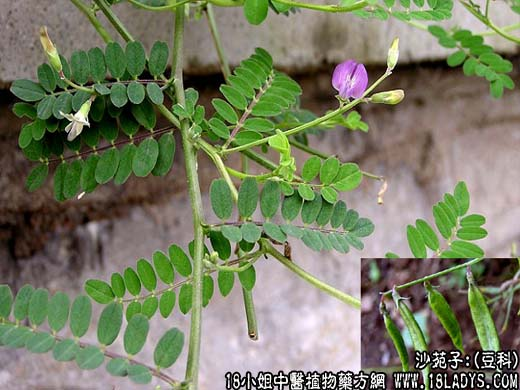

【中药概述】
沙苑子为豆科草本植物扁茎黄芪的成熟种子。甘、温。归肝、肾经。
1．补肾固精：用于肾虚腰痛，可配杜仲续断等同用；遗精早泄、小便频数，用于下元虚冷等症，如（金锁固精丸）。
2．养肝明目：用于肝肾不足、目昏眼花、视力减退等，常配伍枸杞，菟丝子，充蔚子，青葙子，菊花，熟地等。
【药效鉴别】
沙苑子虽属补阳药，其补肾壮阳之功不如淫羊藿、仙茅、补骨脂，但固精作用较好，且能养肝明目。
【药理作用】
有抗利尿和收缩子宫平滑肌作用。
【化学成分】
含维生素A类物质、脂肪油、鞣质等。
【用量用法】
本品10——15g，水煎服。
【使用注意】
阴虚火旺及小便不利者忌。
【附】
盐沙苑子：其药性更为平和，能平补阴阳，并增强补肾固精，缩尿止溺作用。
本文解释权归中药大全，本文地址： https://www.daquan.com/post/1789.html